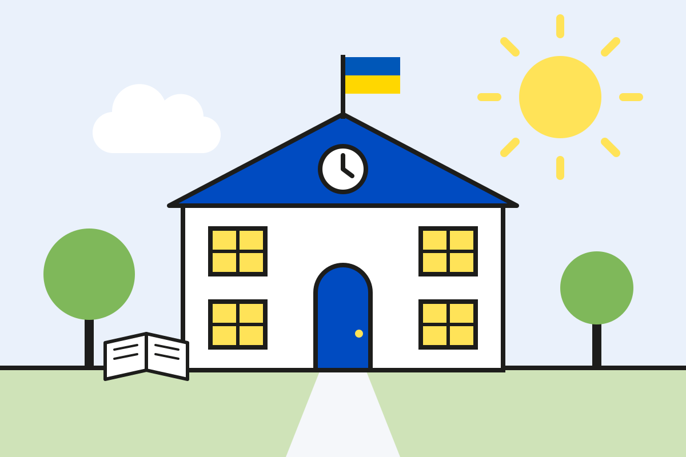

Організація освітнього процесу в умовах воєнного стану: безпека, гнучкість та безперервність навчання
У Трипільському навчально-реабілітаційному центрі організація освітнього процесу в умовах воєнного стану здійснюється з урахуванням безпекової ситуації, особливостей території, можливостей закладу та індивідуальних потреб здобувачів освіти.
Пріоритетом діяльності НРЦ є збереження життя і здоров’я дітей та працівників, створення безпечних умов перебування в закладі й забезпечення права кожної дитини на освіту. Водночас важливим завданням залишається підтримання стабільного освітнього середовища, у якому діти можуть навчатися, спілкуватися, розвивати свої здібності та отримувати необхідну психолого-педагогічну підтримку.
З огляду на особливості освітнього контингенту, зокрема наявність дітей з інтелектуальними порушеннями, організація освітнього процесу потребує чіткого розпорядку, передбачуваності, адаптації освітніх підходів та особливої уваги до емоційного стану кожної дитини.
У закладі визначено моделі організації освітнього процесу, які можуть застосовуватися залежно від зміни безпекової ситуації, наявності відповідних умов та інших обставин, що впливають на функціонування НРЦ.
Моделі організації освітнього процесу
Модель 1. Очне навчання
Базова модель за сприятливої безпекової ситуації.
Освітній процес здійснюється у навчальних кабінетах закладу відповідно до затвердженого розкладу. Усі учасники освітнього процесу перебувають у закладі в межах визначеної безпечної місткості укриття.
Модель 2. Очне навчання з продовженням занять в укритті
Основна модель під час частих або тривалих повітряних тривог.
У разі оголошення сигналу «Повітряна тривога» всі учасники освітнього процесу переходять до укриття. Оскільки укриття закладу має можливість проведення уроків, освітній процес продовжується в облаштованих навчальних зонах.
Модель 3. Дистанційне навчання
Застосовується за неможливості безпечного очного (цілодобового) перебування.
Освітній процес організовується з використанням технологій дистанційного навчання за заздалегідь підготовленим розкладом.
Модель 4. Тимчасове дистанційне навчання (за бажанням батьків)
Застосовується до учнів, які залишаються на очній формі навчання та, за потреби, зараховані до пансіону закладу, але на даному етапі через побоювання щодо безпекової ситуації тимчасово не прибувають до закладу.
На період, коли учні не можуть приїхати до закладу, освітній процес для них організовується дистанційно відповідно до затвердженого розкладу із використанням асинхронної форм взаємодії.
У разі зміни безпекової ситуації, покращення умов безпеки або готовності батьків дитина повертається до очного навчання та, за наявності відповідної потреби й можливості, до проживання в пансіоні закладу.
Модель застосовується індивідуально до окремих учнів і може діяти паралельно з іншими моделями організації освітнього процесу.
Зміна моделі організації освітнього процесу здійснюється відповідно до затвердженого в закладі порядку, з урахуванням актуальної безпекової ситуації, рекомендацій компетентних органів, можливостей закладу та необхідності забезпечення безперервності навчання.
Особлива увага приділяється діям під час повітряної тривоги. У НРЦ визначено порядок оповіщення, переміщення учасників освітнього процесу до найпростішого укриття, організації перебування дітей у безпечному місці та продовження освітнього процесу в укритті. Працівники закладу діють відповідно до затвердженого алгоритму, забезпечуючи організованість, спокій і належний супровід вихованців.
Організація освітнього процесу в умовах воєнного стану передбачає також чіткий розподіл відповідальності між працівниками закладу, узгодженість дій адміністрації, педагогічних працівників, медичного персоналу та інших відповідальних осіб.
Трипільський НРЦ і надалі докладатиме всіх зусиль для того, щоб освітній процес відбувався в безпечних, комфортних і максимально сприятливих для дітей умовах, а кожен здобувач освіти отримував необхідну підтримку, турботу та можливість для розвитку.